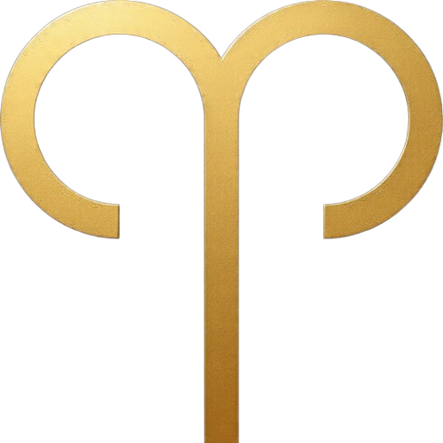
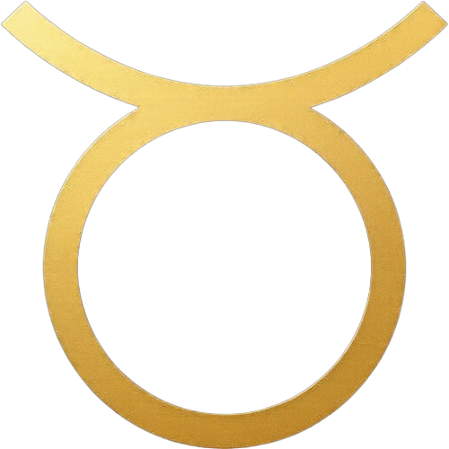
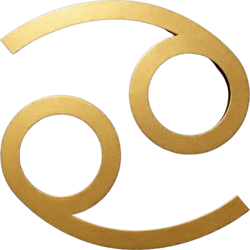
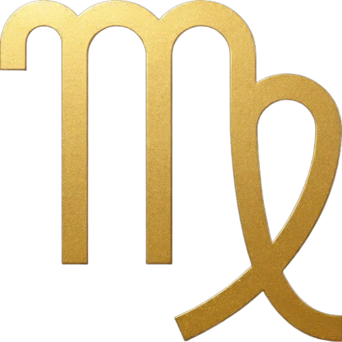
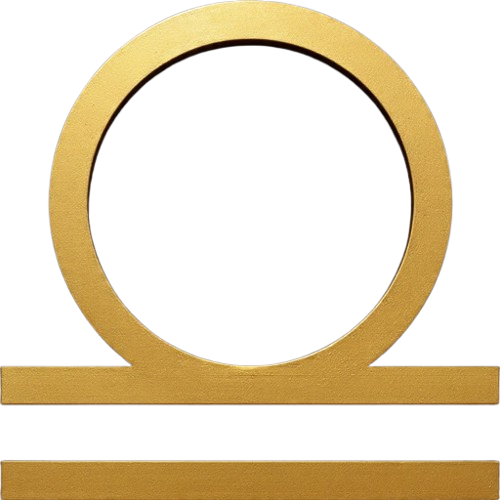
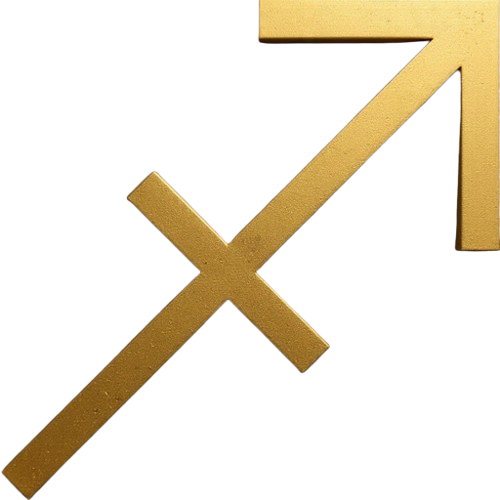
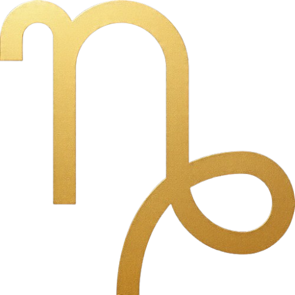
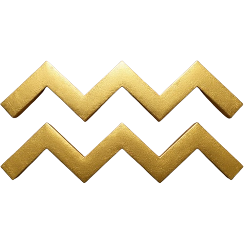
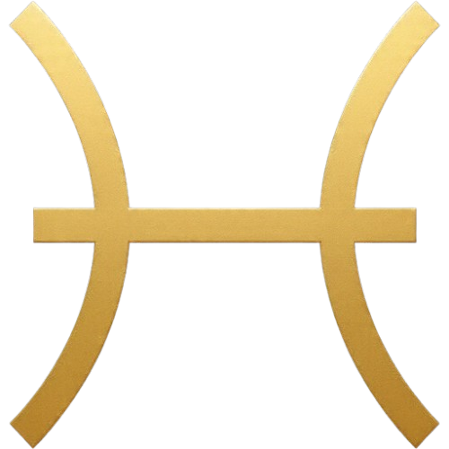

MUNAL
3521
MUNAL
3521
Carta astral
Una carta astral es un diagrama de la posición relativa de los planetas y los signos del zodiaco en un momento determinado, que utilizan los astrólogos para deducir el carácter y personalidad del individuo
El tarot es un juego de barajas constituido por 78 cartas y dividido en 22 arcanos mayores y 56 arcanos menores, cada uno con un significado místico y adivinatorio donde la imagen tiene un papel fundamental.
El tarot es un juego de barajas constituido por 78 cartas y dividido en 22 arcanos mayores y 56 arcanos menores, cada uno con un significado místico y adivinatorio donde la imagen tiene un papel fundamental.
|  |
Aries |
Tauro |
 |
 |
Géminis |
Cácer |
 |
 |
Leo |
Virgo |
 |
|  |
Libra |
Escorpio |
 |
|  |
Sagitario |
Capricornio |
 |
|  |
Acuario |
Piscis |
 |